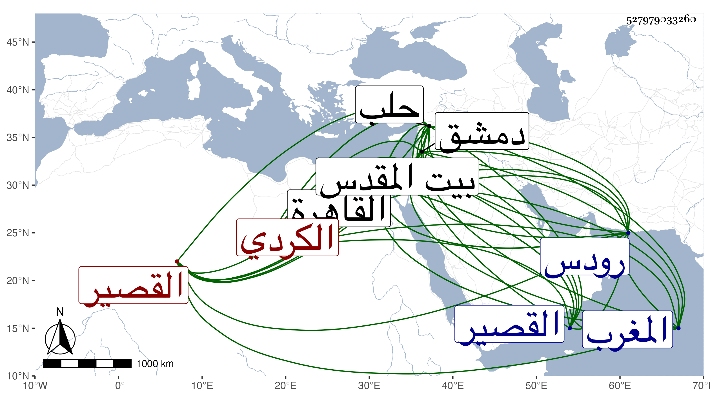

0902Sakhawi.DawLamic.ITO20230111-ara1.EIS1600.527979033260
Biography ID: 527979033260
104
علي بن محمود بن محمد بن أبي بكر بن الجنيد بن شبلي بن الشيخ خضر ابن عبد الملك بن عثمان نور الدين وربما قيل علاء الدين الكردي البقابرصي نسبة لبقابرص من معاملات حلب فلذا يقال له أيضا الحلبي القصيري الشافعي ويعرف بالشريف الكردي . ولد سنة إحدى عشرة وثمانمائة أو التي تليها ببابزيا من عمل القصير لفتنة كانوا رحلوا بسببها من قريتهم بقابروص بموحدة وقاف ثم موحدة ومهملة مضمومتين وآخره مهملة ، وقرأ بها القرآن وبحث المحرر على عمه السيد خليل ، ثم قدم القاهرة في جمادى الأولى سنة أربع وثلاثين وهو فقير جدا فلازم الونائي وسافر معه إلى بيت المقدس وغيرها وندبه للكشف عن الكنائس الشامية في سنة ست وأربعين وسمع هو بالقاهرة على شيخنا وغيره وصحب القاياتي والشرواني والبدر البغدادي الحنبلي والكمال إمام الكاملية والمتواخيين الزين قاسم وإبراهيم القادريين ثم خطيب مكة أبا الفضل النويري في آخرين من الأتراك كدولات باي واستقر به في مشيخة التصوف بالطيبرسية بعد موت زين الصالحين الخطيب المنوفي وحج في سنة ثلاث وأربعين صحبه البدر الحنبلي وسافر مع الغزاة إلى رودس وغيرها غير مرة أولها في سنة أربع وأربعين ثم في سنة سبع وأربعين والتي بعدها ورافقه البقاعي فيهما وأثرى وكثر ماله لا سيما وقد أودعه شخص ممن كان يصحبه قرب موته مالا وأعلمه بأن له عاصبا في بلاده ومات عن قريب فلا العاصب جاء ولا هو اعترف بحيث أن الوزراء لا زالوا يتعرضون له بسبب ذلك ولا يصلون منه لشيء واقترض منه الجمالي ناظر الخاص في بعض الأحايين بواسطة البدر البغدادي وارتهن عنده كتبا ، ولا زال في ترق من المال والوجاهة خصوصا حين تعين بواسطة الجمالي المذكور رسولا عن الأشرف إينال في سنة تسع وخمسين إلى صاحب المغرب ومعه له هدية ثم رجع في المحرم سنة ستين وتزايدت وجاهته حتى أن الاشرف المشار إليه زبر البقاعي مرة عن الوقوف فوقه زبرا فاحشا وكان ذلك سببا لإخماده ولما استقر الأشرف قايتباي زاد في ترقيه لصحبة كانت بينهما وقرره في نظر الخانقاه السرياقوسية ثم في ديوان الأشراف بل وأرسله إلى قلعة حلب ليكون نائبا بها فأقام مدة واتسعت دائرته في الأموال جدا وتكرر طلبه للمجيء والحاجة فيه إلى أن أجيب وقدم القاهرة فهرع الناس للسلام عليه واستمر مقيما على وظائفه إلى أن تعلل بدمل تكون فيه ثم لا زال يتسع إلى أن مات في ليلة الجمعة رابع جمادى الثانية سنة اثنتين وثمانين وصلي عليه من الغد ودفن بحوش سعيد السعداء جوار قبر صاحبه البدر البغدادي وترك شيئا كثيرا يفوق الوصف وكان رحمه الله خيرا صافي البطن لونا واحدا مظهرا للمحبة في وأصحابه ينسبونه إلى إمساك وربما ذكر بالتزيد في الرقم ، ووصفه البقاعي قديما بالشريف الفاضل المجاهد قال : وهو شكل حسن وبدن معتدل صحبته في الجهاد غير مرة فوجدته ينطوي على كرم غزير وشجاعة مفرطة وأخلاق رضية وعشرة حسنة ونية جميلة . قلت : كان هذا من البقاعي قبل تقديم صاحب الترجمة خطيب مكة للصلاة على ولد له بحضرته وقبل زبر الأشرف له بسببه نسأل الله كلمة الحق في السخط والرضى وأشار بعد سياق نسبه لسقط فيه وحكى عنه أنه قال : نمت مرة في شهر رمضان سنة ست وأربعين في دمشق فإذا قائل يقول لي : يا شريف يا شريف فلان أخذ مفتاح خزانتك وهو الآن يسرق مالك قال : فقمت فافتقدت المفتاح فلم أجده فذهبت إلى خلوتي فإذا فيها نور ففتحت الباب رويدا فإذا بذلك الرجل قد فتح خزانتي وهو يأخذ ما فيها فأخذت ما أخذه وحذرته فالله أعلم .
